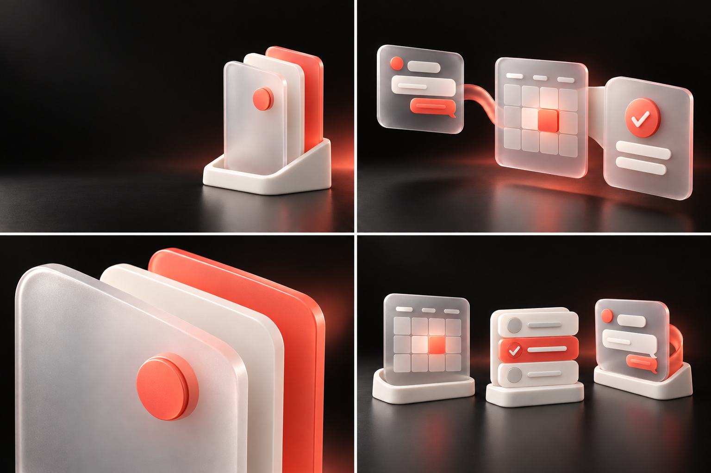
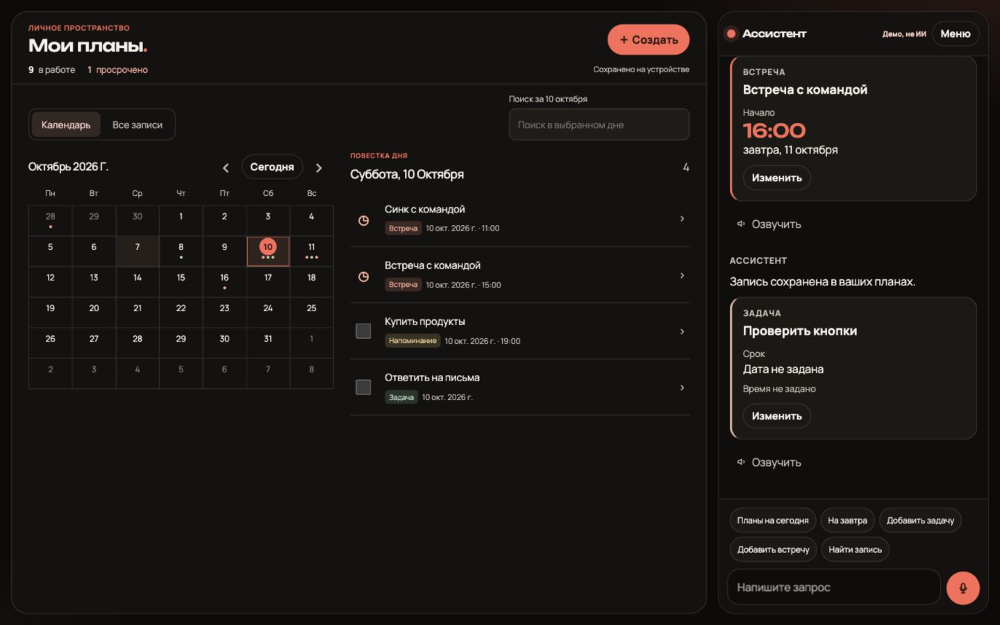

Визуальная система / первое ревью
Компетентность.
С человеческим
теплом.
Один бренд. Новый продукт.
Три способа сделать связь видимой.
Коралл вместо electric lime.
Сохраняем знак, имя и ясность.
01 / Основа
Команда создаёт.
Ассистент помогает
организовать.
competence. остаётся брендом команды. Ассистент — её продукт со своим характером и понятной подписью авторства.
Общий язык: чёрный, молочный белый и коралл. Различие — в композиции, масштабе и предметных метафорах.
Предложение архитектуры бренда. Финальное имя продукта не выбрано.02 / Направления
Выбор ниже переключает просмотр, не утверждает концепцию.
Coral Glass
Из разговора в ясность


03 / Пример применения · концепция
От разговора
к плану.
Задачи, встречи и напоминания —
в одном плане.
Типографика набрана отдельно. Изображение — часть сгенерированного листа; это макет коммуникации, не скриншот продукта.
04 / Цветовая основа
Коралл объединяет.
12 · 11 · 10
28 · 25 · 22
246 · 241 · 235
255 · 106 · 87
Предварительные токены. Коралл — акцент команды и продукта; лайм не входит в систему.
05 / Типографика
Ясность
начинается
с формы.
Аа Бб Вв Ёё Жж Йй Щщ Ъъ Ыы Ьь Ээ Юю Яя
Достаточно сказать, что нужно сделать. Запись получает своё место в плане — и остаётся перед глазами.
Unbounded — короткие заголовки. Evolventa — брендовые тексты и преемственность. В интерфейсе ассистента уже используется Manrope; его замена здесь не предлагается.
06 / Что стоит за концепцией
Сначала факты.
Затем визуальный язык.
Что действительно реализовано в продукте
Локальный календарь, задачи, встречи и напоминания; создание, редактирование и поиск записей. Чат разбирает ограниченные текстовые сценарии. Микрофон имитируется, подключённого ИИ и внешней синхронизации в изученной реализации нет.

Существующий снимок из репозитория, не новая проверка работы приложения.
Что сохраняем от competence.
Имя с точкой, существующий геометрический знак, контраст и дисциплину композиции. Electric lime исключён по вашему решению. На слайде 9 TravelBot уже есть подпись «by competence.» — прецедент самостоятельного продукта с авторством команды.
Граница готовности
Это первое ревью: аудит, три направления, четыре сцены на каждом листе, пример коммуникации и предварительные правила. Направление ещё не выбрано. Отдельные иконки, alpha-экспорты и финальный брендбук будут следующим этапом. Непрозрачные листы не являются готовым паком иконок.